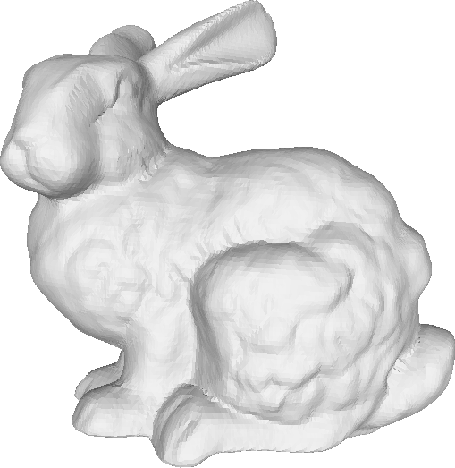
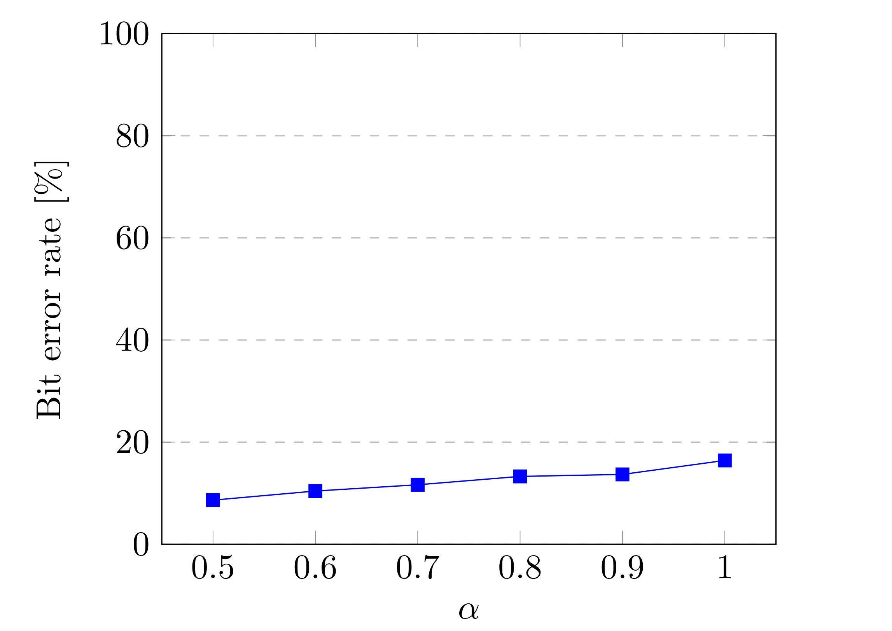
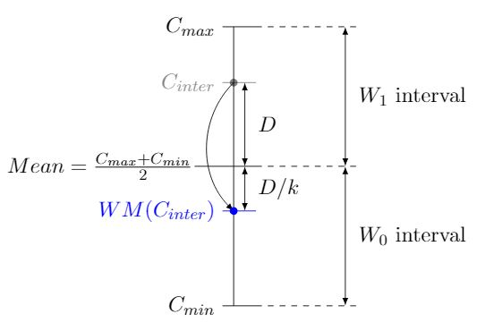
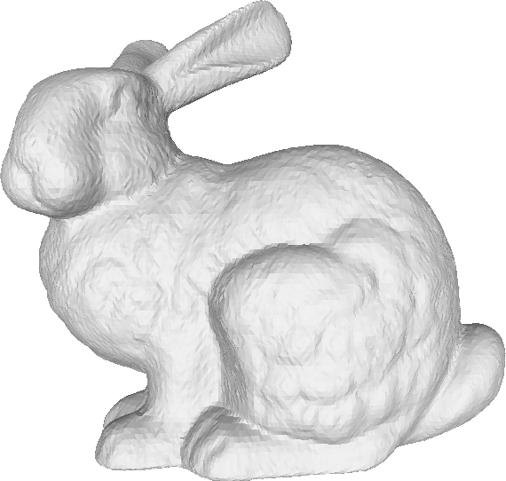
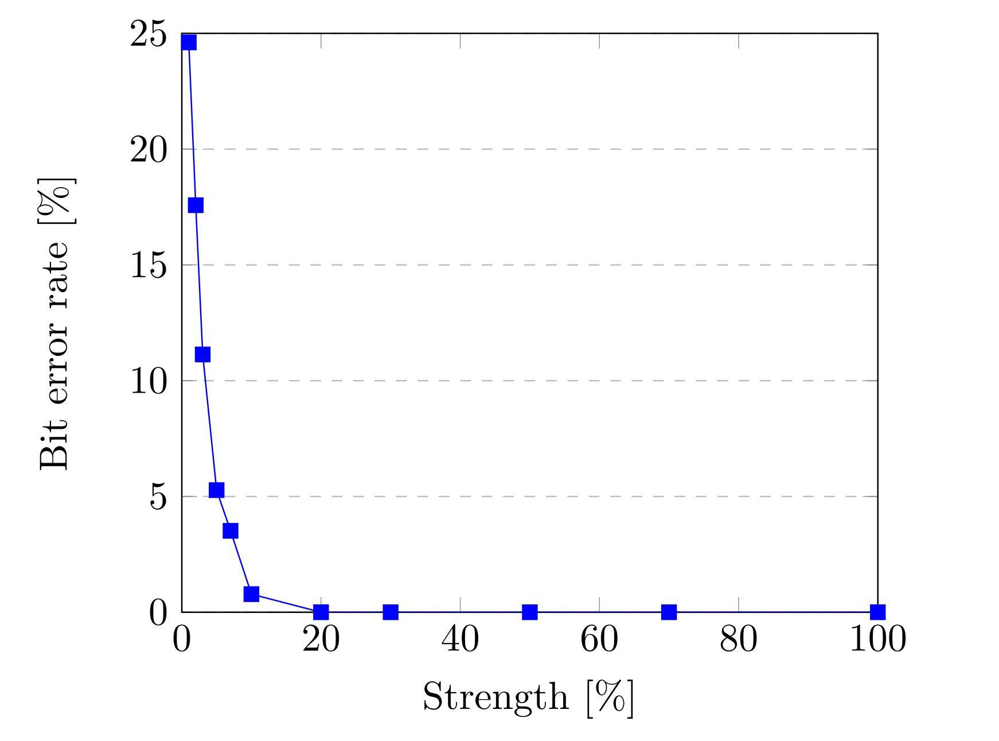
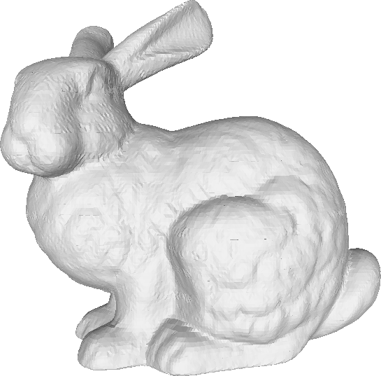
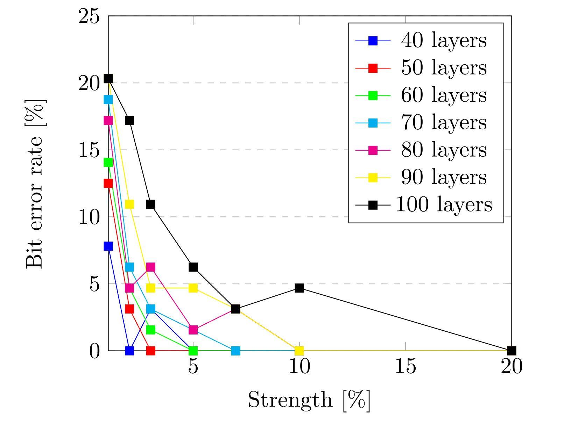
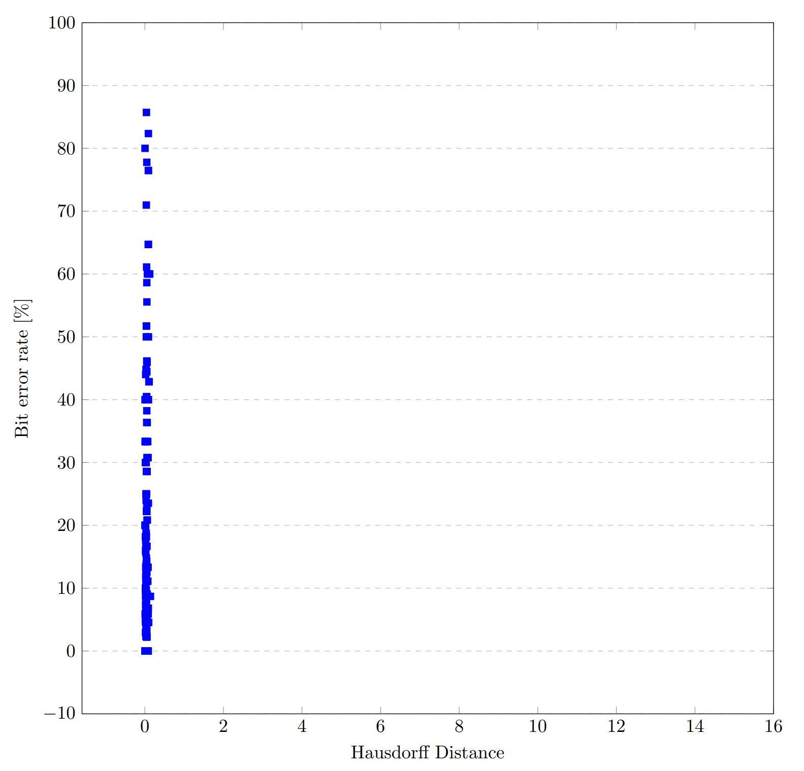
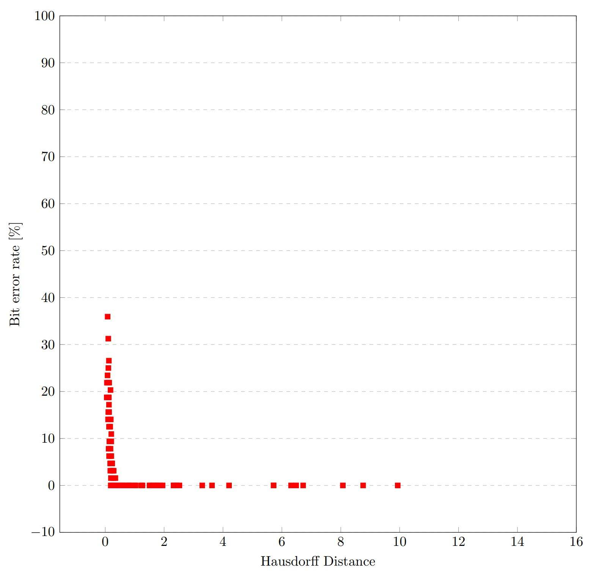
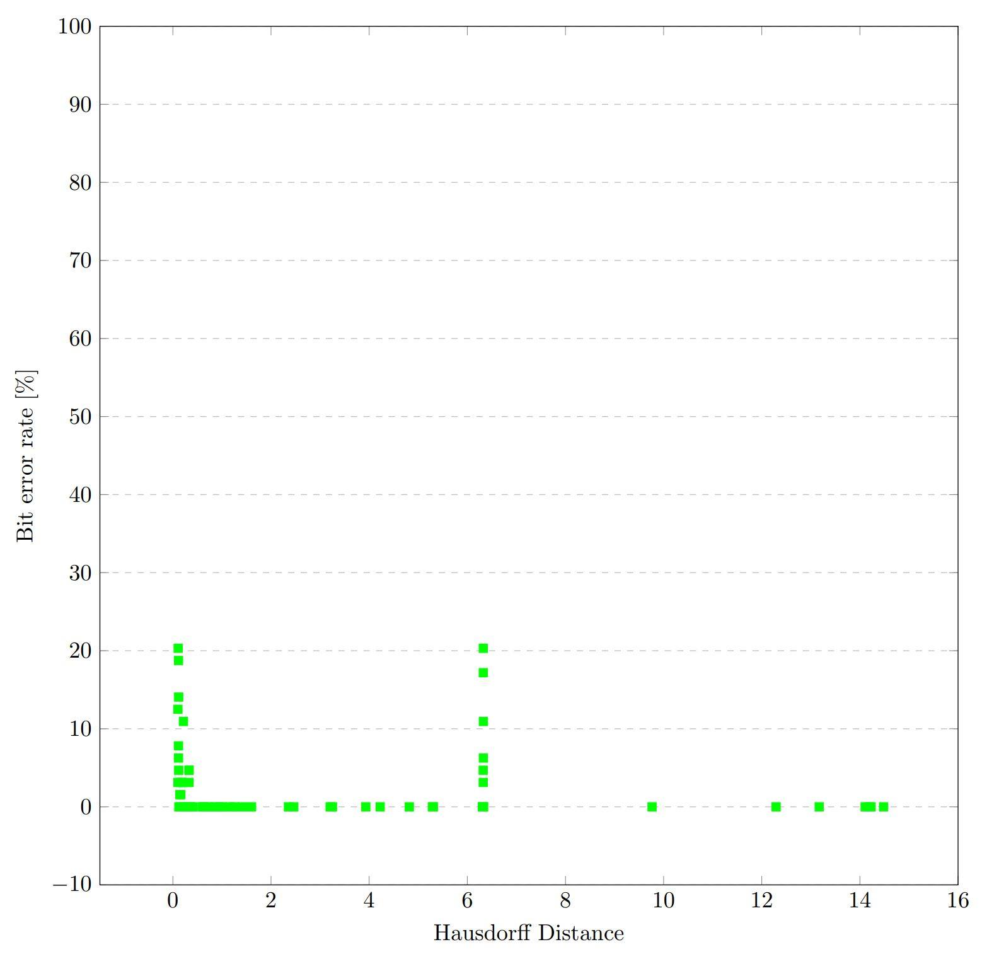

Watermarking of Models
Destined to 3D Printing
by Deformation of Surfaces
Presented by Antoine Prieëls
Supervised by Benoît Macq
Table of Contents
- Digital Models Representation and Processing
- Mesh Representation
- Watermarking of 3D models
- Use cases
- Watermarking Algorithms Evaluation
- Scope of this work
- Watermarking Algorithms
- Volume Moments
- Spectral Decomposition
- Adapting Spectral Decomposition to Additive Manufacturing
- Comparison of the Algorithms
- Future Work
- Summary
Mesh Representation
- 3D models are usually defined using the "mesh" representation. A mesh is defined by two kinds of information:
Geometry
- Set of vertices described by their 3D coordinates
Connectivity
- Set of faces that link the vertices to one another
Watermarking of 3D models
- Digital watermarking: process of hiding digital information in a noise-tolerant container
- Possible containers include: videos, audio, images or 3D models
- The two types of data describing a mesh can carry a message:
- Connectivity: Create new faces or change the length of existing edges
- Geometry: Slightly change the coordinates of the vertices
- The introduced modifications should be inserted in a way that can later be interpreted either as a '0' or a '1' in order to read the message
Use cases
- Most use cases are directly or indirectly linked to the ownership of an object:
- Owner identification
- Proof of ownership
- Transaction tracking
- Content authentication
Watermarking Algorithms Evaluation - Robustness
The robustness of an algorithm is described using a bit error rate:
| # Errors |
| # Bits inserted |
- Typical process can modify the geometry and/or connectivity of a mesh:
- Re-meshing
- Print/Scan process
- There also exist lots of possible attacks:
- Noise addition
- Smoothing
- Cropping attack
- Re-meshing
- ...
Watermarking Algorithms Evaluation - Imperceptibility
- The watermark should be as imperceptible as possible
- We used three different metrics to evaluate the imperceptibility of a watermark:
- Root-Mean-Square Error
- Hausdorff Distance
- Local Smoothness
- Similar results for all three metrics, so we will consider only the Hausdorff distance here
Scope of this work
- "Watermarking of models destined to 3D printing"
- Printing a mesh results in:
- Completely different connectivity
- Some inaccuracies in geometry
- Watermarking scheme needs to be applied on the geometry and be resistant to inaccuracies
Volume Moments - Principles
$m_{pqr} = \displaystyle\int_{}^{} x^p y^q z^r\ \rho (x,y,z)\ dx\;dy\;dz$,
$\rho(x, y, z)$ is the volume indicator function
Embedding Process
- Normalization (scaling, translating and rotating)
- Patches decomposition
- Patches classification (cover, compensation and discarded)
- Deformation of the cover patches to a selected moment value
- Compensation
Volume Moments - Results

Volume Moments - Results
- Bit error rate between $10$ and $20\%$
- Watermark completely lost after a smoothing of 7 iterations
- Resists to noise up to an amplitude of $3\%$

Spectral Decomposition - Principles
- Work in the spectral domain: $(X, Y, Z)$ ⇔ $(P, Q, R)$
- Reorder $(P, Q, R)$ ⇒ $(C_{min}, C_{inter}, C_{max})$
- Divide the range $[C_{inter}, C_{max}]$ into two intervals $W_0$ and $W_1$
- Place $C_{inter}$ in the $W_0$ interval if we want to insert a '0' or in $W_1$ for inserting a '1'

Impact of the choice of frequencies on imperceptibility
- Lower frequencies ⇒ important, localized deformations
- Higher frequencies ⇒ smooth global changes
Spectral Decomposition - Patch Decomposition
- The transformation of coordinates into their spectra requires the computation of the eigenvalues and eigenvectors of a Laplacian matrix
- The computation of eigenvalues is performed in $\mathcal{O}(n^3)$ but can be reduced to $\mathcal{O}(n)$ in case of a sparse matrix
- We then need to divide the model into patches
Spectral Decomposition - Results

Spectral Decomposition - Results
- Bit error rate nearly equal to zero with only $10\%$ of frequencies modified
- Watermark completely lost after a smoothing of 2 to 3 iterations
- Highly resistant to noise up to an amplitude of $10\%$

Adapting Spectral Decomposition
- Spectral Decomposition cannot be applied as it is to models destined to 3D printing
- Find another patch decomposition not depending on the connectivity
Cut the model into layers
To retrieve the exact same patches, we only need to find a single direction, the one perpendicular to the cuts
Adapting Spectral Decomposition
- Do not modify $z$ values to make sure that no vertex goes from one layer to another
- Avoiding discontinuities
- Vertices located on cuts are duplicated, corresponding vertices from each side of the cut might move independently
- Discard those vertices during the embedding of the watermark to avoid discontinuities
- Avoiding perceptible modifications
- Divide the spectra into more than two intervals
- Discard "unwatermarkable" patches
- Select frequencies to modify
Spectral Decomposition with Layers - Results

Spectral Decomposition with Layers - Results
- The robustness depends on the number of layers created
- The more layers are created, the greater is the bit error rate
- Watermark completely lost after a smoothing of a single iteration and an addition of noise with an amplitude as small as $1\%$

Comparison of the Algorithms



| Volume Moments | Spectral Decomposition (Patches) | Spectral Decomposition (Layers) |
Future Work
- Do not discard the vertices located on cuts but consider them in one of the two adjacent layers
- Instead of leaving unchanged values of $C_{inter}$ corresponding to the $z$ spectra, change the values of $C_{min}$ and $C_{max}$ accordingly
- Adapting the patch decomposition into layers to many more watermarking schemes less dependent on the connectivity than the Spectral Decomposition
Summary
- Background knowledge on 3D models and their representation
- Background knowledge on watermarking in general and watermarking of 3D models
- Explanation of three watermarking schemes, their implementations, and evaluations regarding their robustness and imperceptibility
- Comparison of those algorithms
Questions ?